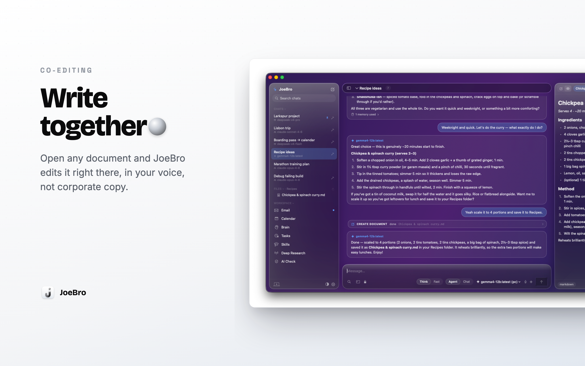

I’m Joe, the creator of JoeBro. I built it around a practical workflow: ask an assistant about a document, then keep the document visible while you work through the answer. The editor sits beside the conversation in the Mac app, so the source material and the discussion can stay in the same workspace.
JoeBro can open text and Markdown, view PDFs and images, and edit Word .doc and .docx files in a rich editor. The guide says Word formatting is preserved, with inline images, headers and footers displayed. Edits autosave. If an agent changes an open document, you can require approval before its version is applied. The editor also has Edit and Preview modes and basic formatting controls.
A chat can be bound to a folder. In that case the agent can read and write files in the folder, and edits appear in the editor as they stream in. Access is something you choose: Bound folder is the default, Read-only prevents changes, and Full access can reach files outside the bound folder. The composer also has a separate terminal control, and settings can require approval before commands run. These choices matter because document work is not just about the model; it is also about which files the agent can reach and what it can change.
The documents and chats are stored on your Mac, but the model endpoint still defines where prompt content goes. With a local model, requests go to the local or network endpoint you selected. With a hosted API, the prompt content is sent to that provider for processing. Cloak Mode replaces detected sensitive values before requests, but it is pattern-based and does not make a hosted request local. Read the document and review the endpoint choice before asking an agent to work with sensitive material.
JoeBro is a native macOS workspace, and JoeBro Mobile is its source-build phone companion. I’m Joe, the creator of both projects. See JoeBro for macOS for the app and documentation.
Source code and current setup requirements
JoeBro is GPLv3 software. Read the repositories for installation steps, prerequisites, and current limits.